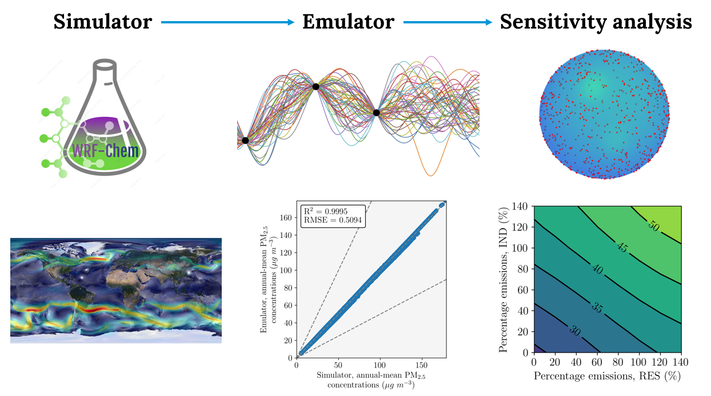

Emulation of complex air quality models - Methods
Contents
Emulation of complex air quality models - Methods¶

Problem¶
Numerical atmospheric models are useful to simulate air quality, weather, and climate. However, these models are slow and have high computational costs. Some compromises to meet these constraints are to:
Reduce the model accuracy.
By reducing the model complexity e.g., use simpler representations of mechanisms, decrease the (space/time) resolutions, replace analytical solutions with parameterisations.
Reduce the model precision.
By using reduced precision computer chips.
Reduce the number of experiments.
Use a bigger computer.
Though, these compromises are not ideal (or sometimes even possible).
Alternative approach¶
Another approach is to use emulators. Emulators are machine learning models that act as proxies of these numerical atmospheric models. They are trained on data from model simulations and learn statistical associations between inputs and outputs. They are much cheaper to run, enabling many more experiments to be undertaken. These emulators are often designed using Gaussian process regressors, due to their high prediction accuracy on test data. Rasmussen & Williams (2006) do a great job of explaining them. They’ve been used in the atmospheric sciences to explore uncertainties, sensitivities, and for prediction problems.
The general approach is split into simulation and emulation. First, the inputs and outputs of the prediction problem are determined. Then simulations are designed, executed, and evaluated. Then emulators are designed, optimised, evaluated, and used for prediction.
Application¶
We developed emulators to predict air quality and public health in China. The summary of our approach is:
We simulated air quality using WRFChem.
a. Our inputs were 5 anthropogenic emission sectors (residential, industrial, land transport, agriculture, and power generation).
b. Our outputs were fine particulate matter (PM\(_{2.5}\)) and ozone (O\(_3\)) concentrations.
c. We used a maxi−min Latin hypercube space–filling design to select the scalings to apply to the inputs (pyDOE).
d. There were 50 years of training simulations and 5 separate years of test simulations (independent Latin hypercube designs).This step takes a while, even on a high-performance computer.
e. We performed a control run of the simulator and evaluated it against measurements to ensure it accurately predicted our outputs.
We emulated air quality using Gaussian process regressors (scikit-learn).
a. Our design included:Preprocessing the inputs with a power transform (Yeo-Johnson) to make them more Gaussian-like (scikit-learn).
We used a Matern kernel.
We optimised the hyperparameters of the model using genetic programming (TPOT).
We developed 1 emulator per grid cell from the simulator (30,556 in total).
b. The emulators were trained on the 50 years of simulator data.
This work was also done in parallel on a high-performance computer, using Dask (instructions from Pangeo).
c. The emulators evaluated to a R\(^2\) of 0.999 for both outputs on the unseen test data.
Results¶
The emulators were used to predict a wide range of possible emission scenarios (32,768 in total).
See the results here.
Further information¶
Short-term air quality prediction.
Long-term air quality and public health prediction
Code.
Paper - Emulator development, in preparation.
Conibear, L. Reddington, C. L., Silver, B. J., Chen, Y., Knote, C., Arnold, S. R., Spracklen, D. V. (2021). Machine Learning Emulation of Long−Term Air Pollution Exposure and Disease Burden from Emission Changes in China.
Paper - Emulator application to future climate scenarios, in preparation.
Conibear, L. Reddington, C. L., Silver, B. J., Arnold, S. R., Turnock, S. T., Klimont, Z., Spracklen, D. V. (2021). The Contribution of Emission Sources to the Future Air Pollution Disease Burden in China.
Paper - Emulator application to recent trends, in preparation.
Conibear, L. Reddington, C. L., Silver, B. J., Chen, Y., Knote, C., Arnold, S. R., Spracklen, D. V. (2021). Emission Sector Impacts on Air Quality and Public Health in China from 2010−2020.